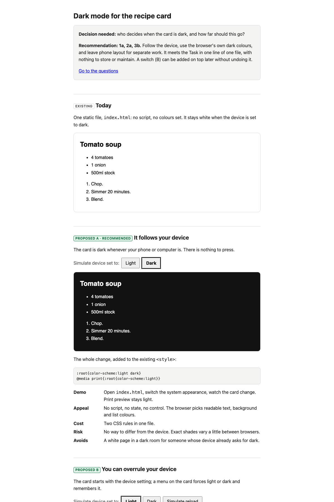

Branch lf at f99ad5ace plus the fixes below. Private LF_HOME under /tmp/lf-qa-bp, a disposable recipe-card repository with a bare origin, real Claude for the primary (default model) and for explore (claude:sonnet). Run on 2026-11-25.
Did: lf task create 'Add a dark mode to the recipe card' --run --graph feature --json, with skills.explore.agent: codex.
Saw: Codex was out of quota until Nov 30. Status said explore is waiting for codex capacity until Nov 25 07:31 … It goes on by itself
. The retry kept Codex after I changed the setting to claude:sonnet, so I interrupted and ran again. Explore then ran headless as claude -p … --model sonnet while the primary ran in a held terminal on the default model. Works.
Did: attached with lf resume --task 2d0e18 and pressed Enter on Claude's trust dialog, which selects its exit choice.
Saw: claude exited with 1. The server restarted the primary (Conversation: running (started again 07:28, attempt 1)
). Works.
Saw: about two minutes later, Graph feature: At breakpoint after-explore.
On the next line, status said:
latest Graph: Graph feature finished; nothing further is launched · started by QA Person
Fixed. That line describes the run that parked, which ended its carrier. It now reads:
latest Graph: Graph feature stopped at breakpoint after-explore; `lf task run 2d0e18` continues it · started by QA Person
The artifact explore left, scratch/explore.html:

On its first turn the restarted primary (task-session) chose:
lf session rename … 'recipe dark mode' --suggest; lf task wait 2d0e18 --until submitted --timeout 540
Its description was Rename session and wait for explore breakpoint
. Broken: --until submitted returned only for an open PR or a finished Task, so the primary sat inside the tool call while the Task waited at the breakpoint. The handoff could not land until the 9-minute timeout.
Fixed. submitted now also returns when the Task waits at a breakpoint (ops/task.rs). I updated the --until help and the task-session skill to match, and added a unit case. Live check on a command Graph (- cmd: help task, - break: check, - cmd: help): a wait started before lf task run returned exit 0 with At breakpoint check.
Right after a continue, task_graphs.breakpoint was already NULL, so a new wait does not return early.
The live primary was still running the old binary's wait, so I pressed Esc. Claude fires no Stop hook on Esc, and the server's idle wake needs one, so nothing came for 87 s. That gap existed before this change. When I typed where does this stand?
, the handoff was delivered with the turn, and the primary presented it:
Explore run 440a0a35 finished, and the Task is waiting for you at the after-explore breakpoint. Nothing in index.html has changed … A. Follows your device | B. Adds a switch | C. Cook mode (what you get · cost and risk) 1. Which vision? a) Follow the device (recommended) b) … plus a switch c) Cook mode 2. Which dark colours? a) browser built-in (recommended) b) warm kitchen palette 3. Add the mobile viewport tag? a) Yes b) No (recommended) Recommendation: 1a, 2a, 3b … Reply with your picks, like "1a 2a 3b", or just "continue" to accept the recommendation.
Typed: 1b 2b 3b, I want the switch with a warm kitchen palette
. The primary appended the decision to scratch/design.md and ran:
lf task run 2d0e18 --at-arrival f49ee81a-… --reason '"1b 2b 3b, I want the switch with a warm kitchen palette" — 1b: follow device plus Auto/Light/Dark switch; 2b: warm kitchen palette in dark only; 3b: …'
The kickoff worker received that steer with the words verbatim and committed lf kickoff: Plan dark mode with an Auto / Light / Dark switch and warm palette
. Works. I interrupted at concept-review rather than run a full build.
lf task auto on on a Task parked at check: the run continued to the end and the Task went to done · auto: on
. Works.
Fixed. .lf/skills/qa.md told QA runs to add .lf/graphs/qa.yaml ending in - interactive: demo. A Graph named qa also replaces the qa step inside build: lf graph show feature listed cmd: help task / break: check / cmd: help there. The note now uses qa-start.yaml with - break. .lf/qa/antigravity.md no longer says interactive:.
cargo test -p loopflow-execution --lib ops::task::tests::task_wait_condition_releases_terminal_tasks | passed |
cargo test -p loopflow --lib breakpoint_feature_kickoff_receives_the_chosen_layout (now also asserts the status line) | passed (85 s) |
| Clippy, Swift, full suites | gate / CI |
Works now: a worker on another model, a primary that quit and was restarted, parking, status, a handoff with artifacts and numbered choices, a reply carried through --at-arrival/--reason to the next worker, waits that return at a breakpoint, and auto through a parked breakpoint.
Not reached: Desktop (Now ordering, the Continue button, the sidebar) and iOS. Those need the Dev bundle and a display, so they stay with gate and demo. Codex as a worker (no quota until Nov 30). A primary that was fully quit (/exit) rather than crashed, waiting for a breakpoint to start it in a held terminal.
Still wrong, worst first:
build's qa) resolves to any repository Graph of that name.Step d148293b-… is running explore), and the suggested action at a breakpoint is generic (
run the next work with `lf task run`; inspect earlier Graphs and independent Sessions first).